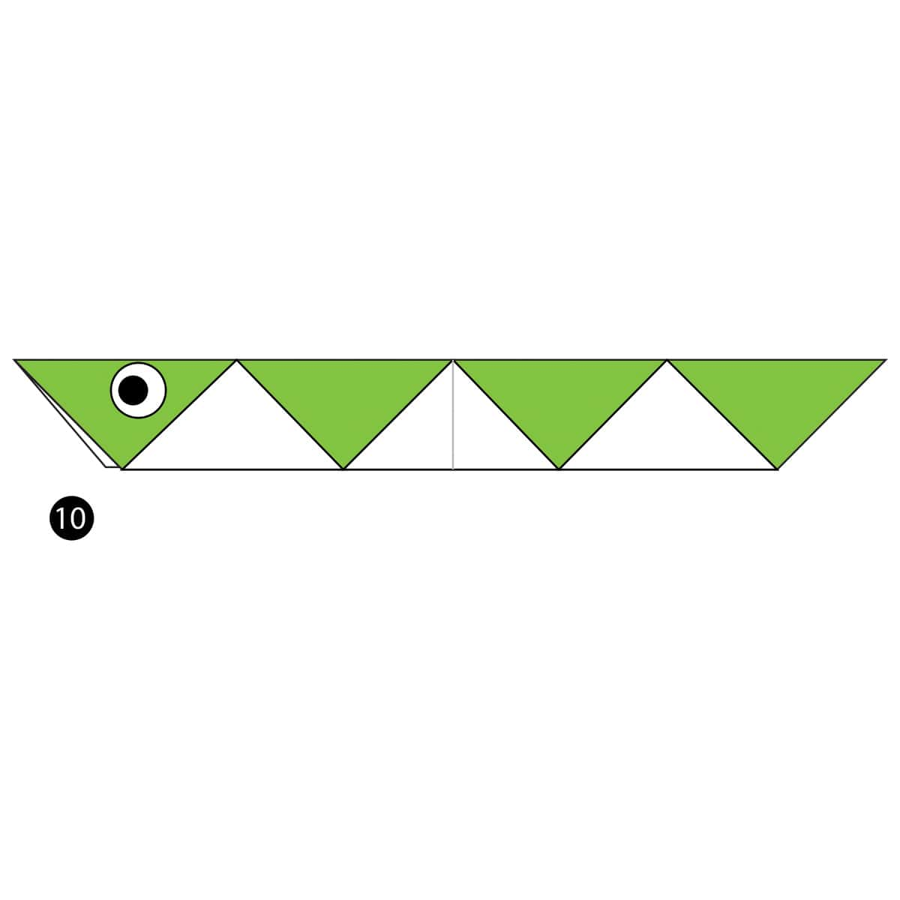

Orgami Designs
About Us
Follow Us

Interesting Facts about Elephant
- 1. THEY’RE THE WORLD’S LARGEST LAND ANIMAL
- 2. THEIR TRUNKS HAVE MAD SKILLS
- 3. THEY COMMUNICATE THROUGH VIBRATIONS

Interesting Facts about Pigeons
- 1. PIGEONS ARE HIGHLY SOCIABLE ANIMALS. THEY WILL OFTEN BE seen IN FLOCKS OF 20-30 BIRDS.
- 2. PIGEONS COMMONLY LIVE UPTO 15 YEARS
- 3. PIGEONS CAN FIND THEIR WAY BACK TO THE NEST FROM 1300 MILES AWAY.

Interesting Facts about Snakes
- 1. SNAKES HAVE INTERNAL EARS BUT NOT EXTERNAL ONES
- 2. SNAKES DON'T HAVE EYELIDS
- 3. SNAKES CAN'T BITE FOOD SO HAVE TO SWALLOW IT WHOLE.

Interesting Facts about Camels
- 1. CAMELS ARE MOSTLY FAMOUS FOR THEIR HUMPS
- 2. CAMELS CAN REACH 7 FEET IN HEIGHT(AT THE HUMP) AND WEIGH UPTO 1500 POUNDS
- 3. CAMELS LIVE 40-50 YEARS

Interesting Facts about Pandas
- 1. THEIR EYES ARE DIFFERENT TO NORMAL BEARS
- 2. THEY SPEND A LOT OF THEIR DAY EATING
- 3. PANDAS SOMETIMES DO HANDSTANDS WHEN THEY WEE!

Interesting Facts about Girrafe
- 1. GIRAFFE'S ARE THE TALLEST MAMMALS ON EARTH
- 2. A GIRRAFE'S NECK IS TOO SHORT TO REACH THE GROUND.
- 3. GIRRAFE ONLY NEED TO DRINK ONCE EVERY FEW DAYS.